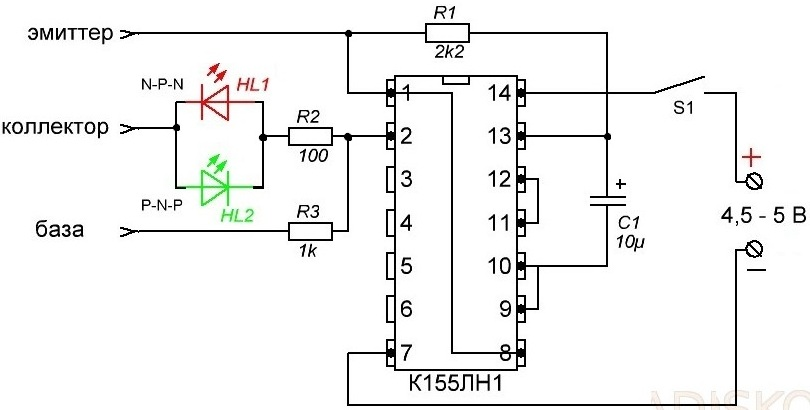
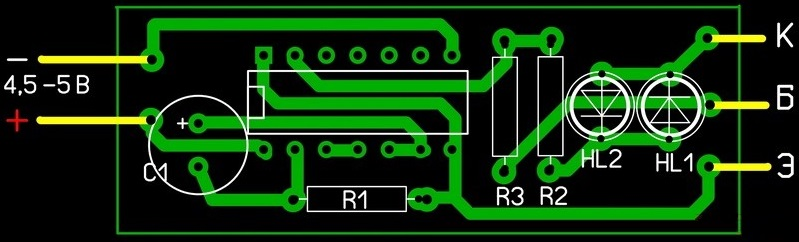
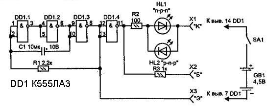
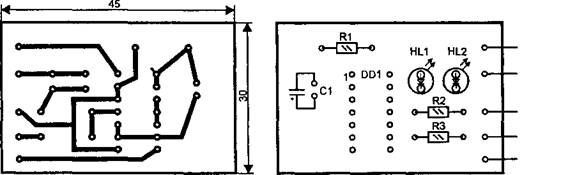
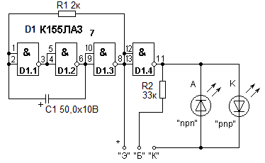
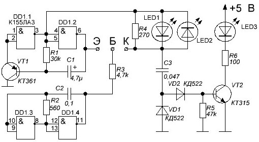

Испытатели транзисторов и диодов на цифровых микросхемах
Испытатель транзисторов и диодов на микросхеме К155ЛН1

Рис. 1 - Схема испытателя транзисторов и диодов
Конструкция испытателя транзисторов и диодов (рис. 1) состоит всего из 7 электронных компонентов и печатной платы. Собирается быстро и работать начинает абсолютно без всякой настройки.
Схема собрана на микросхеме К155ЛН1 содержащей шесть инверторов. При правильном подключении к ней выводов исправного транзистора зажигается один из светодиодов (HL1 при структуре N-P-N и HL2 при P-N-P).
Если неисправен:
- Пробой: вспыхивают оба светодиода.
- Внутренний обрыв: оба светодиода не зажигаются
Проверяемые диоды подключаются к выводам «К» и «Э». В зависимости от полярности подключения загораться будут HL1 или HL2.

Рис. 2 - Печатная плата испытателя транзисторов и диодов
Постарайтесь не забыть поставить под микросхему панельку.
Пользоваться пробником можно и без установки его в корпус, но если затратить ещё немного время на его изготовление, то будете иметь полноценный, мобильный пробник, который уже можно взять с собой (например на радиорынок). Корпус на рис. 5 изготовлен из пластмассового корпуса квадратной батарейки, которая уже своё отработала. Всего-то делов было удалить прежнее содержимое и отпилить излишки, просверлить отверстия под светодиоды и приклеить планку с разъёмами для подключения проверяемых транзисторов. На разъёмы не лишним будет «одеть» цвета опознавания. Кнопка включения обязательна. Блок питания это привёрнутый несколькими винтами к корпусу батарейный отсек формата ААА.
Крепёжные винты, небольшого размера, удобно пропустить через плюсовые контакты и привернуть с обязательным использованием гаек.
Оптимальным будет использование аккумуляторов ААА, четыре штуки по 1,2 В дадут лучший вариант питаемого напряжения в 4,8 В.
Для полного удобства желательны удлинители на крокодилах (рис. 8). Тогда уж точно ни один транзистор случайно не выпадет и гарантированно не пропадёт, особенно актуально при пользовании тестером в «полевых» условиях.
Испытатель транзисторов и диодов на микросхеме К155ЛА3 (вариант 1)
Испытатель транзисторов позволяет быстро проверить работоспособность транзисторов, диодов, прозвонить цепь и даже определить структуру транзистора (n-p-n или p-n-p).
В схеме испытателя (рис. 9) используется импульсный генератор на трех логических элементах «И—НЕ» DD1.1—DD1.3. Элемент DD1.4 используется как выходной каскад — инвертор. Частота следования импульсов зависит от емкости конденсатора С1 и сопротивления резистора R1 и при указанных номиналах составляет несколько герц. Поэтому при проверке транзисторов и диодов соответствующие светодиоды будут вспыхивать с данной частотой, поскольку полярность напряжения между гнездами X1 и ХЗ каждый раз будет меняться на противоположную.
Пробник можно использовать для качественной проверки электролитических (оксидных) конденсаторов. Их подключают к гнездам X1 и ХЗ. При исправном конденсаторе светодиоды поочередно вспыхивают и медленно гаснут. Время прекращения свечения светодиодов зависит от емкости конденсатора.

Рис. 9 - Схема испытателя транзисторов и диодов на микросхеме К155ЛА3 (вариант 1)

Рис. 10 - Печатная плата и размещение элементов испытателя транзисторов и диодов на микросхеме К155ЛА3
Питается пробник от батарей или выпрямителя напряжением 5 В. Логический элемент DD1 можно заменить на К555ЛН1, возможно применение аналогичных микросхем серии К155.
Испытатель транзисторов и диодов на микросхеме К155ЛА3 (вариант 2)

Рис. 11 - Схема испытателя транзисторов и диодов на микросхеме К155ЛА3 (вариант 2)
Если транзистор исправен, будет вспыхивать соответствующий светодиод, показывая структуру проверяемого транзистора.
Проверяемый диод подключается к гнездам "Э" и "К". Если диод исправен и анод подключен к гнезду "Э", то будет мигать светодиод "A". Светодиод "К" будет мигать, если к гнезду "Э" подключен катод исправного диода.
При неисправном диоде мигают или оба светодиода или не светится ни один.
Те же гнезда можно использовать для прозвонки цепей или при проверке электролитических конденсаторов. Напряжение питания пробника 5 В, при отсутствии необходимого источника питания, пробник можно подключить к источнику питания компьютера (красный провод +5 В, черный -5 В).
Испытатель транзисторов и диодов на микросхеме К155ЛА3 (вариант 3)
Работоспособность транзисторов типа p–n-p и n–p–n можно определить, собрав прибор для проверки транзисторов по схеме на рисунке 12.

Рис. 11 - Схема испытателя транзисторов и диодов на микросхеме К155ЛА3 (вариант 3)
Схема прибора для проверки транзисторов построена так, что питающее напряжение переменной полярности формируется в схеме, благодаря чему проверка транзисторов обоих типов производится без дополнительных переключений.
На элементах DD1.1 и DD1.2 реализована схема генератора на 1,5 Гц, формирующего импульсы напряжения разной полярности на выводах коллектор – эмиттер. Транзистор VT1 в схеме генератора играет роль эмиттерного повторителя с большим входным и малым выходным сопротивлением, за счет чего возможно реализовать схему генератора на низкой частоте.
На элементах DD1.3 и DD1.4 выполнен генератор прямоугольных импульсов частотой 6 кГц. Импульсы этого генератора, через резистор R3, подаются в базу проверяемого транзистора.
Если транзистор исправен, импульсы, приходящие на базу, усиливается, и с коллектора поступают на усилитель постоянного тока на транзисторе VT2, вызывая прерывистое свечение светодиода HL3. Тип испытываемого транзистора определяют по тому, какой из светодиодов HL1 или HL2 действует.
При исправном p–n–p-транзисторе мерцающий свет излучают светодиоды HL1 и HL3, при исправности n–p–n-транзистора – светодиоды HL2 и HL3.
Прибор для проверки транзисторов питается напряжением +5 В. Вместо микросхемы К155ЛА3 можно применить К555ЛА3. Светодиоды любые, желательно разного цвета свечения.
При желании можно в приборе для проверки транзисторов вместо световой сигнализации применить звуковую, для чего их схемы исключить диоды VD1 и VD2, а с конденсатора С3 подать на простой одно- или двухкаскадный усилитель низкой частоты. На выходе усилителя включить звукоизлучатель (динамик, пьезоэлемент и т.д.).
Источники:
unradio.ru - Пробник для проверки транзисторов и диодов на цифровой микросхеме
radioskot.ru - ИСПЫТАТЕЛЬ ДИОДОВ И ТРАНЗИСТОРОВ
radiolub.ru - Прибор для проверки транзисторов
Юному радиолюбителю для прочтения с паяльником / В. В. Мосягин